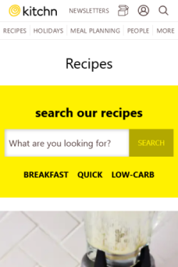
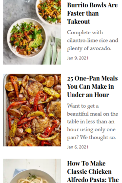
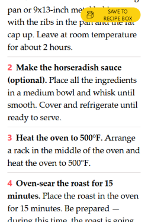

White Space
The Kitchn - recipe list
This website has a very clean design and is very conscious of the space it creates between elements and images. It uses white space as seen here to keep elements from crowding each other, leaving the site pleasing to the eye. Spaces where there aren't text or images give the mind a chance to rest and decide where to focus. Also less chance for fat thumbing something you didn't want.
Repetition
The Kitchn - recipe list
This page utilizes repetition in order to create a steady experience for the user, so they know where to look for the next item. Each image is the same size in the same space, every title and description is styled the same and is about the same length, making so there are no jarring differences that remove users from the flow. It's easy to scroll and read through.
Visual Hierarchy
The Kitchn - recipe page
I liked this part of the recipe pages because of its subtle but effective visual hierarchy. It can be very easy to get lost it the steps of a recipe, but with the different colored step numbers and the bolded step summary, it's much easier to find what you're looking for as you're moving back and forth between webpage and cooking.